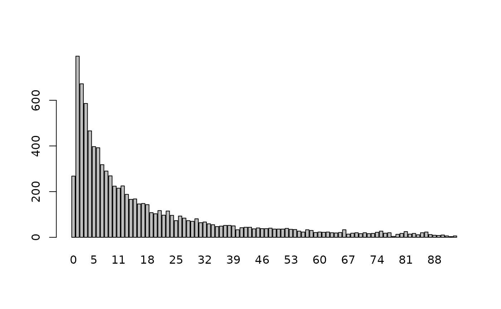
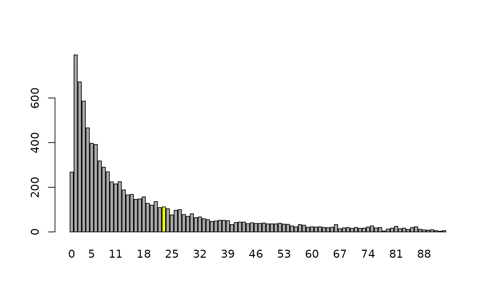

Correct a specific age heap in a vector containing age in years
correctSingleHeap(
x,
heap,
before = 2,
after = 2,
method = "lnorm",
fixed = NULL
)numeric vector representing age in years (integers)
numeric or integer vector of length 1 specifying the year for which a heap should be corrected
numeric or integer vector of length 1 specifying the number of years before the heap that may be used to correct the heap. This input will be rounded!
numeric or integer vector of length 1 specifying the number of years after the heap that may be used to correct the heap. This input will be rounded!
5year: heaps are assumed to be every 5 years (0,5,10,...)
10year: heaps are assumed to be every 10 years (0,10,20,...)
a character specifying the algorithm used to correct the age heaps. Allowed values are
lnorm: drawing from a truncated log-normal distribution. The
required parameters are estimated using original input data.
norm: drawing from a truncated normal distribution. The
required parameters are estimated using original input data.
unif: random sampling from a (truncated) uniform distribution
numeric index vector with observation that should not be changed
a numeric vector without age heaps
## create some artificial data
age <- rlnorm(10000, meanlog=2.466869, sdlog=1.652772)
age <- round(age[age < 93])
barplot(table(age))

## artificially introduce an age heap for a specific year
## and correct it
age23 <- c(age, rep(23, length=sum(age==23)))
cc23 <- rep("darkgrey", length(unique(age)))
cc23[24] <- "yellow"
barplot(table(age23), col=cc23)
barplot(table(correctSingleHeap(age23, heap=23, before=2, after=3, method="lnorm")), col=cc23)
barplot(table(correctSingleHeap(age23, heap=23, before=5, after=5, method="lnorm")), col=cc23)

# the first 5 observations should be unchanged
barplot(table(correctSingleHeap(age23, heap=23, before=5, after=5, method="lnorm",
fixed=1:5)), col=cc23)